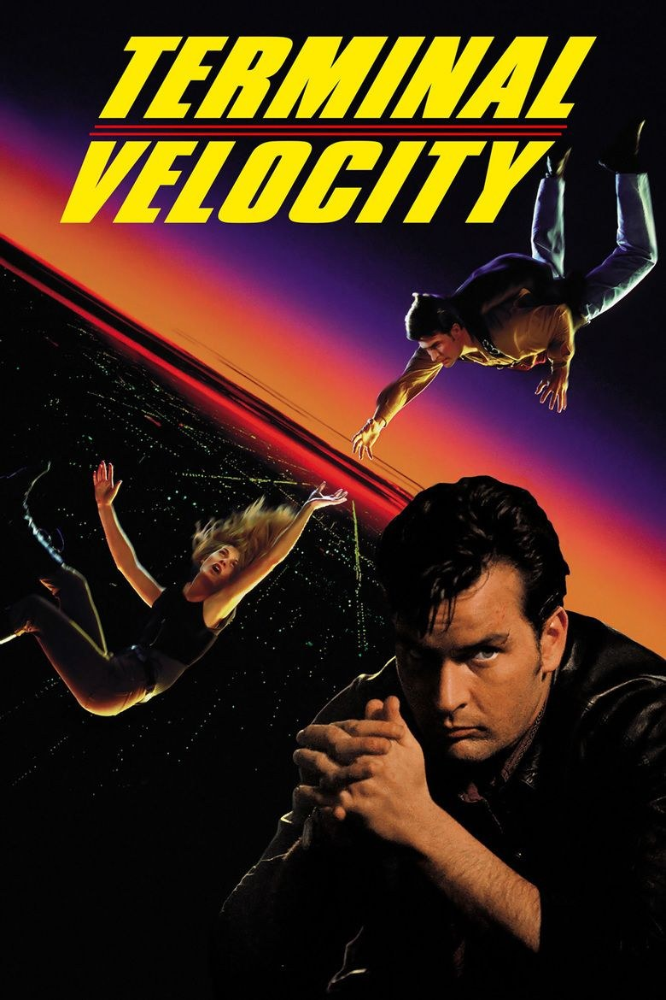
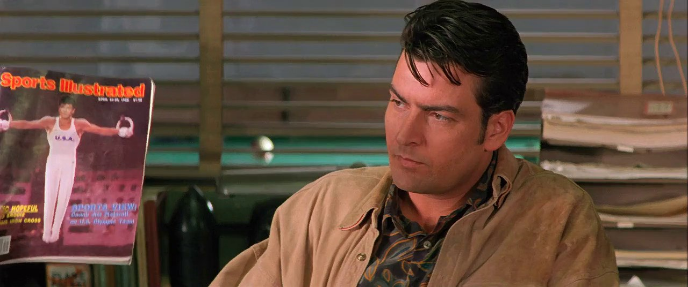
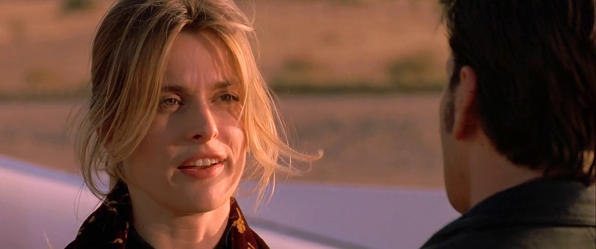

Sommaire8 sections
Je devais avoir douze ans quand j'ai découvert Terminal Velocity. Si je l'ai vu, c'est grâce à mon grand-père : c'est lui qui l'avait acheté.
Ce que j'en ai gardé tout de suite, c'est la chute libre. Ces corps qui tombent dans le ciel, sans rien d'autre que le vent. À douze ans, ça m'avait marqué.
Je l'ai revu depuis, et j'en garde un excellent souvenir. Le plaisir est resté intact.
Ce soir, on saute.

L'affiche de Terminal Velocity (1994)
Terminal Velocity sort aux États-Unis le 23 septembre 1994. C'est un film d'action de Deran Sarafian, produit par Hollywood Pictures, avec Interscope Communications et PolyGram Filmed Entertainment. Il dure 102 minutes.
À l'écran, Charlie Sheen joue Richard « Ditch » Brodie, un parachutiste. Face à lui, Nastassja Kinski incarne Chris Morrow, une agente secrète indépendante. James Gandolfini, Christopher McDonald et Melvin Van Peebles complètent la distribution.
Le point de départ tient en une ligne : un parachutiste se retrouve pris dans un complot mené par des mafieux russes, et doit faire équipe avec cette agente pour survivre. Le scénario est de David Twohy, la musique de Joel McNeely.
C'est un film de ciel et de vitesse, pensé pour la chute libre. Voilà ce que mon grand-père avait choisi, et ce que j'ai découvert à douze ans.
À l'origine, Terminal Velocity, c'est un scénario sans commande. David Twohy l'écrit seul, sans qu'un studio le lui ait demandé, et Hollywood Pictures le lui achète plus de 500 000 dollars.
Au départ, Kevin Reynolds et Tom Cruise étaient pressentis, à la réalisation et dans le rôle principal. Leurs engagements ne le permettent pas. C'est finalement Deran Sarafian qui réalise, et Charlie Sheen qui prend la place.
Le tournage se déroule surtout dans l'Ouest américain : Palm Springs, les Alabama Hills, un parc d'éoliennes près de Tehachapi, plusieurs villes d'Arizona, et même Moscou. Le film coûte 50 millions de dollars.
Sa dernière grande scène est la plus connue : Charlie Sheen au volant d'une Cadillac Allanté, en pleine chute. Pour la tourner, l'équipe suspend une vraie voiture sous un hélicoptère, puis combine fond bleu et zoom arrière pour donner l'impression qu'elle tombe du ciel.
Le film sort le 23 septembre 1994 et prend la deuxième place du box-office américain, derrière Timecop. Il a un concurrent direct : la même saison, Drop Zone sort aussi, un autre film d'action sur la chute libre.

Charlie Sheen dans Terminal Velocity (1994)
Ditch Brodie dirige une école de parachutisme en Arizona. C'est un casse-cou : au début du film, il saute illégalement d'un gratte-ciel, alors que l'administration fédérale de l'aviation surveille déjà son école de près.
Un jour, une jeune femme se présente, nerveuse, enjouée, qui dit n'avoir jamais sauté. Elle exige pourtant un saut en chute libre depuis l'altitude de croisière, tout de suite. Ditch accepte de l'emmener lui-même. Pendant le vol, elle repère un autre avion, et le saut tourne mal. L'école est fermée, l'enquête commence, et Ditch risque gros.
Très vite, des détails ne collent plus avec ce qu'elle lui avait raconté. Quelqu'un le suit, quelqu'un l'attaque, et Ditch comprend qu'il est mêlé à bien plus qu'un accident : une affaire d'espionnage et de mafia russe, dont l'avion aperçu en plein vol est une pièce.
Il lui faudra rester en vie, comprendre à qui se fier, et surtout retourner dans le ciel.
Je m'arrête là : ce film se découvre mieux sans rien savoir de la suite.
Terminal Velocity ne cherche pas à être un grand film. C'est un film d'action rapide, ironique, qui ne se prend pas trop au sérieux, et sa force est là.
Ce qu'on y retient, ce sont les scènes de chute libre. Roger Ebert, qui n'était pas tendre avec l'intrigue, y voyait l'un des meilleurs morceaux d'action qu'il ait vus depuis des années : Sheen accroché à l'aile d'un avion, puis dans un cargo, puis en chute libre avec une Cadillac. Il compare le film à un « Sight » du guide Michelin : pas un voyage, pas un détour, mais quelque chose qui mérite le coup d'œil.
Le scénario, lui, demande qu'on ferme les yeux : fausses identités, or volé, ex-agents du KGB. Une critique récente le dit simplement : le film fonctionne mieux quand on met son cerveau en veille.
Charlie Sheen y joue la décontraction ironique, au point que Roger Ebert le trouvait proche de la parodie de ses Hot Shots !, comme s'il savait que le film n'était pas sérieux. Nastassja Kinski a de la repartie, et James Gandolfini, bien avant Les Soprano, laisse déjà entrevoir un sacré acteur.
Quelque chose de très années 90 s'y entend aussi : un ennemi encore tout frais de la fin de l'URSS, des ex-agents sans emploi, et le monde qui change d'ordre. Terminal Velocity en fait un décor de film d'action, sans plus.

Nastassja Kinski et Charlie Sheen (de dos) dans Terminal Velocity (1994)
Terminal Velocity n'a pas manqué son public par manque de moyens : il a coûté 50 millions de dollars. Il est sorti à la bonne place, le 23 septembre 1994, et a pris la deuxième place du box-office américain, derrière Timecop. Mais le début est resté le meilleur moment : 5,5 millions de dollars le premier week-end, puis une chute.
Au total, il rapporte environ 16,5 millions aux États-Unis et au Canada, un peu plus de 31 millions à l'étranger. Autour de 47 millions dans le monde, donc moins que son budget. Une déception, que les articles de l'époque et d'aujourd'hui n'hésitent pas à qualifier d'échec commercial.
La critique n'a pas aidé : 19 % d'avis positifs sur Rotten Tomatoes. On lui reprochait une intrigue absurde et un Charlie Sheen qui jouait presque en parodie de lui-même.
Et il avait de la concurrence : la même saison, Drop Zone sortait aussi, autre film d'action sur la chute libre. Deux films sur le même sujet, la même année : un seul pouvait rester dans les mémoires.
Résultat : pas de suite, pas de culte, et un film qu'on retrouve surtout en VHS, puis en DVD et Blu-ray, loin des projecteurs.
Pourquoi le revoir ? D'abord pour la chute libre. Ce film a été pensé autour du ciel, et la scène de la Cadillac reste un beau morceau d'artisanat : une vraie voiture suspendue sous un hélicoptère, un fond bleu, un zoom arrière. À l'ère du tout-numérique, ça se regarde autrement.
Ensuite pour sa distribution. Nastassja Kinski tient tête à Charlie Sheen, Christopher McDonald est un tueur volontairement excessif, et on y voit James Gandolfini bien avant Les Soprano.
Et puis pour son rythme : 102 minutes, une intrigue qui ne s'arrête jamais, qui ne demande pas qu'on réfléchisse. Un film d'évasion, au sens propre : il se regarde cerveau en veille, comme le disait une critique récente.
Pour moi, c'est aussi un film que je retrouve avec plaisir. Je l'ai revu depuis mes douze ans, et il tient toujours.
Il existe en Blu-ray, édité par Kino en 2019, avec un commentaire audio. Ça reste la meilleure façon de le voir, sans la VHS.
Terminal Velocity n'a pas marqué l'histoire du cinéma. Il a rapporté moins que ce qu'il avait coûté, la critique ne l'a pas épargné, et Drop Zone est arrivé la même saison.
Mais pour moi, c'est un film qui compte. J'avais douze ans, mon grand-père l'avait acheté, et la chute libre m'a marqué. Je l'ai revu depuis, et j'en garde un excellent souvenir.
Si vous cherchez un film d'action rapide, ironique, avec un vrai goût du ciel, laissez-lui sa chance.
Merci d'avoir regardé ce nouvel épisode de SOMEDAY. Et si vous aussi, vous avez découvert ce film à l'adolescence, dites-le-moi : somedayvhs@outlook.fr.
La cassette est dans le lecteur. On rembobine.
Titre original
Terminal Velocity
Pays
États-Unis
Genre
Action · Thriller
Durée
102 min
Producteurs
Ron Booth · Tom Engelman · Scott Kroopf
Avec aussi
Christopher McDonald · James Gandolfini · Melvin Van Peebles
Musique
Joel McNeely
Note
Découvert vers 12 ans, grâce à mon grand-père
SOMEDAY — S4 EP. 01